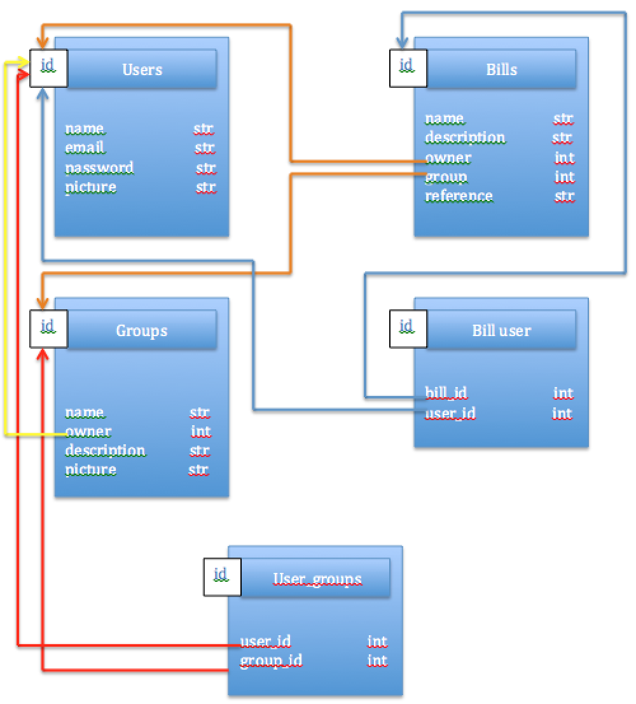

Welcome to the page for Billing Split project,
You'll be able to find here where we are with the development of your project
See you
You'll be able to find here where we are with the development of your project
See you
We desígned the data bases and the pages aspects on paper
Pictures coming soom
Let's see how our database model will be
First, we want to have some users, which will have a name, a unique email, a password and a profile pic.
Secondly, we need a bill table, which will have an author (e.g. a User id)
To know who's on the bill, we'll need a bill user table with the bill id & the user id. Then we'll be able really simply to get every person from a bill
To help us with the bill creation, we'll create some groups. The groups will allow us select at the beginning every people from the group for a new bill. After that we would like to be able to select only person from a group with a checkbox (facebook like render for people participating at a event for example)
Finally, we need the user from a group to be in a table as well.
We didn't change the picture yet, but there would probably not be a group parameter in the Bills table anymore.
Like i said, we we'll need a groups table to register all the groups
We designed our render views for the entire project. It might change with time, but here there are :

We put on Heroku the first few pages with the user creation and session handling. That's what we presented in class for our presentation. We also worked a lot on a tutorial on RoR to have an understanding of how RoR works.
We both finished our tutorial on RoR and are now ready to code.
We also implemented a profile picture for the users. They can of course update their profile picture (which will delete the older one) and their profile picture is deleted when the user is deleted.
We now have an admin user who is able to delete users.
We started implementing the bill task to add a bill to a user.
This is it for now. See you soon.